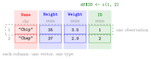

Data Frame¶
Definition¶
A data frame is R's structure for a table of data: a two-dimensional object with rows and columns in which every column is a vector with its own data type and all columns have the same length. Typically each row is one observation (a person, a state, a product) and each column is one variable measured on it.
data.frame(name1 = vector1, name2 = vector2, ...) builds a data frame from vectors; the argument names become the column names (R makes up names if none are given). A new column is added with df$new_name <- vector.
Functions for a first look at a data frame:
str(df): the dimensions, and for each column its name, type and first values;head(df): the first six rows;dim(df),nrow(df),ncol(df): the numbers of rows and columns;names(df): the column names;View(df)(in RStudio): a spreadsheet-like view in a separate tab.
Interpretation¶
A data frame looks like a matrix but behaves like a set of columns. Each column is a vector, so within a column all values have one type, while different columns can hold text, numbers and logical values side by side. That is exactly what a real data set needs: a name, a height and a weight for each animal.

The figure is the data frame of Examples 1 and 2. The column Name (red) holds character values and Height and Weight (blue) hold doubles; each column is one vector with one type, shown in the header. A row, such as Chip, 35, 3.5, 1, collects the values of one observation across all columns. The column ID (green) was added later with df$ID <- c(1, 2); it had to have the same length, 2, as the existing columns.
Internally a data frame is a list of equal-length columns. That is why df$Height extracts a column just like l$A extracts a list element, and why df[1, 3] uses row and column positions as for a matrix (subsetting by position). Real data sets are usually read from a comma-separated values file rather than typed in; the first step is then to check str(), dim() and head() to see what was read.
Two mistakes are common. Columns of different lengths cause trouble: R stops with an error when the lengths do not fit together (2 and 3 rows), and when the longer length is a multiple of the shorter one it silently repeats the shorter column, as it does with a single value. And a misspelt column name after $ does not give an error at all: R returns NULL, an empty object, so df$height (lower-case h) quietly gives nothing.
Key Results¶
- All columns of a data frame have the same length; each column has one type, but types may differ between columns.
- Rows are observations and columns are variables.
df$nameextracts a column as a vector;df$name <- vectoradds or replaces a column.str()shows dimensions, column types and first values;head()shows the first six rows;dim(),nrow(),ncol()andnames()work as for matrices.- A data frame is a list of columns, so list tools such as
$,[[ ]]andlength()(the number of columns) apply to it.
Examples¶
1. Building a data frame.
df <- data.frame(Name = c('Chip', 'Chap'), Height = c(35, 37),
Weight = c(3.5, 2.9))
df
#> Name Height Weight
#> 1 Chip 35 3.5
#> 2 Chap 37 2.9
The numbers on the left are row names; by default they are simply 1, 2, ….
2. Adding a column and inspecting the structure.
df$ID <- c(1, 2)
str(df)
#> 'data.frame': 2 obs. of 4 variables:
#> $ Name : chr "Chip" "Chap"
#> $ Height: num 35 37
#> $ Weight: num 3.5 2.9
#> $ ID : num 1 2
dim(df)
#> [1] 2 4
names(df)
#> [1] "Name" "Height" "Weight" "ID"
chr means character and num means double.
3. A built-in data set. USArrests comes with R. It has one row per US state (50 rows) with four variables for 1973: arrests per 100,000 residents for murder, assault and rape, and UrbanPop, the percentage of the population living in urban areas.
dim(USArrests)
#> [1] 50 4
head(USArrests, 3)
#> Murder Assault UrbanPop Rape
#> Alabama 13.2 236 58 21.2
#> Alaska 10.0 263 48 44.5
#> Arizona 8.1 294 80 31.0
mean(USArrests$UrbanPop)
#> [1] 65.54
Here the row names are the state names. head(USArrests, 3) shows three rows instead of the default six.
4. Pitfalls: unequal lengths and misspelt names.
data.frame(a = c(1, 2), b = c(1, 2, 3))
#> Error in data.frame(a = c(1, 2), b = c(1, 2, 3)) :
#> arguments imply differing number of rows: 2, 3
df$height
#> NULL
mean(df$height)
#> [1] NA
#> Warning message:
#> In mean.default(df$height) :
#> argument is not numeric or logical: returning NA
The first call fails because the columns would have 2 and 3 rows. The column is called Height, so df$height silently returns NULL, and the error only shows up later as an NA with a warning.
Prerequisites¶
Related Concepts¶
- Subsetting by Position
- Single and Double Brackets
- Reading and Writing CSV Files
- Logical Subsetting
- Tibble
- Matrices in R
Sources¶
- Programming for EOR · Week 1
- Lecture script Data Types and Structures (Part 2), part "Data Frames"; Working with Data Frames, Built-in Functions, and Factors (Week 2, Part 2), "More on Data Frames"
Aliases: data.frame(), dataframe, data set in R, str(), head(), USArrests Keywords: rows as observations, columns as variables, adding a column with $, structure with str, dimensions and names
Last updated: 10 November 2026 16:43
Data FrameContingency TableFactorLogical SubsettingMissing ValuesReading and Writing CSV FilesSubsetting by PositionTibbleAtomic VectorListSingle and Double BracketsMatrices in R